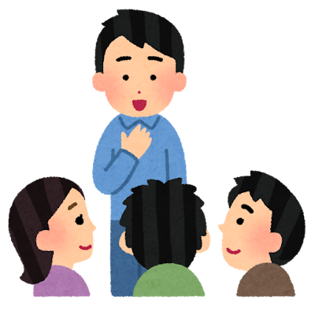
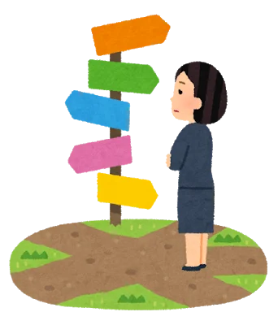
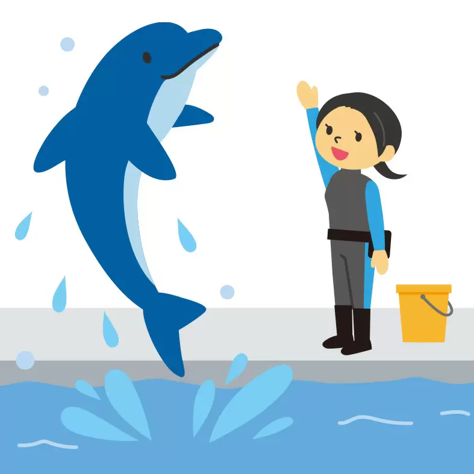
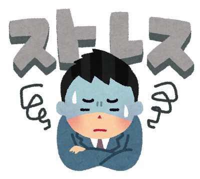
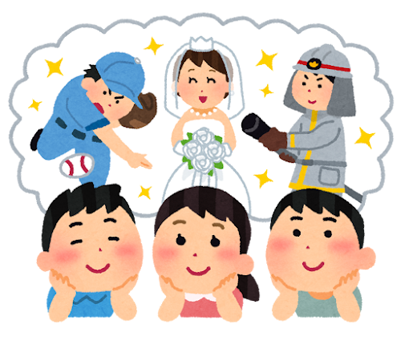

- 自己紹介をお願いします！
- 長所・短所は？
- 自分を動物に例えると何ですか？
- 自分をIT機器に例えると何だと思いますか？
- ストレス発散方法はありますか？
- 一つ夢が叶うとしたら何をお願いしますか？
- 今後働く上で、モチベーションを高めるものは何だと思いますか？逆に、下げるものは何だと思いますか？
- 100万円あったら何に使いますか？
菅田 健
この前スーツを着て友人と会った際にどこかの企業の管理職の人に見えるといわれました
これからよろしくお願いします！

長所は比較的温厚なところ
短所は優柔不断なところ

イルカ
穏やかで人懐っこいところに共通点を感じる。
また、人とのコミュニケーションを大切にし、周りと協力し合って突き進めるところも似てると思う。

スマートフォン
スマートフォンは使用者に多種多様な機能を提供し暮らしをサポートする。
まだまだなれていないが、自分もスマートフォンのように、人と人とを結ぶサポートする縁の下の力持ちになりたいから。
音楽を聴きながら寝ること。
できるだけリラックスできる場所で目を閉じ、音楽に集中する時間を設ける。
これが自分にとって一番リラックスできるから。

誰にも劣らない『何か』
自信をもって特技・強みといえるものが何かしらほしい。
例えば料理とか場を和ませる力とか…

ほかの人との信頼関係がモチベーションを高めると思う。
逆に下げるのは、『これをやって何になるのだろう』と感じてしまうことだと思う。
そう思ってしまうと何に対してもやる気がなくなるから。

貯金(現実的な回答でごめんなさい！)
今すぐにお金を使いたいと思うことが見つからないので今後のために貯金する。
貯金以外の選択肢だったら趣味に使うと思う。